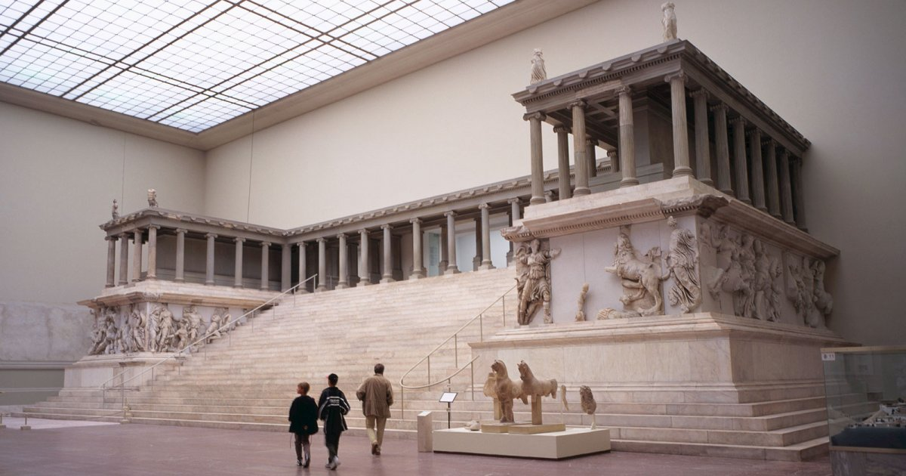
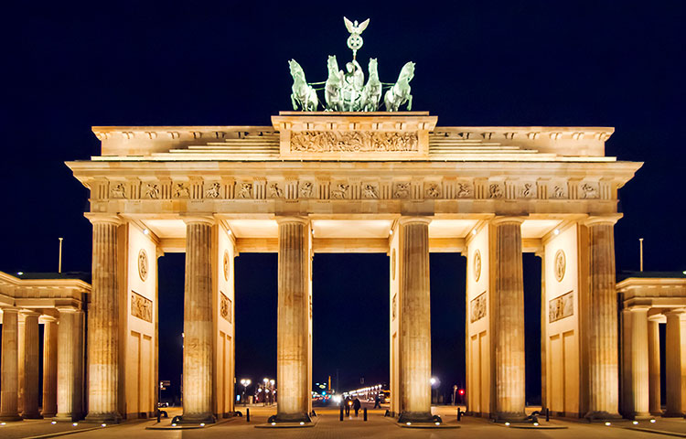
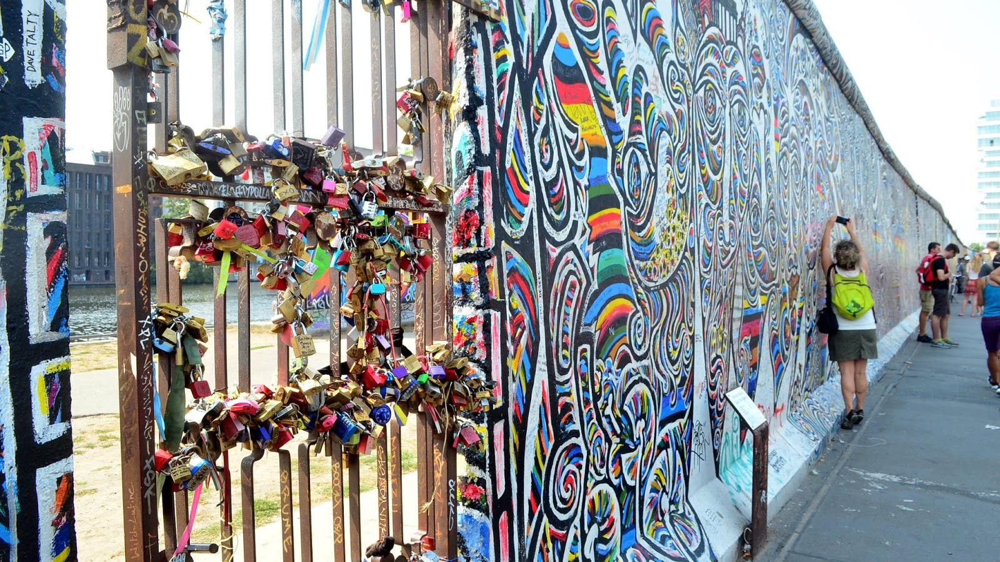
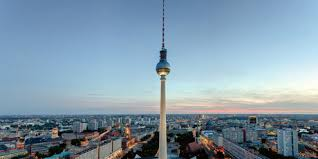

LUGARES TURÍSTICOS DESTACADOS EN BERLÍN
| NOMBRE | DESCRIPCIÓN | IMAGEN |
|---|
| Museo de Pérgamo |
El Museo de Pérgamo forma parte del complejo conocido como Isla de los Museos, que agrupa varios de los edificios más representativos de la ciudad de Berlín. La originalidad de este museo, inaugurado en 1930, reside principalmente en su propio concepto. Las principales atracciones de la Colección de antigüedades clásicas son el Altar de Zeus de la ciudad de Pérgamo, la Fachada de Mushatta y estatuas helenísticas como el famoso Espinario. Fuente: https://es.wikipedia.org/wiki/Museo_de_P%C3%A9rgamo |
 |
| NOMBRE | DESCRIPCIÓN | IMAGEN |
|---|
| Puerta de Brandeburgo |
La Puerta de Brandeburgo, es una antigua puerta de entrada a Berlín y uno de los principales símbolos tanto de la ciudad como de Alemania. Era el acceso, a modo de propileos, al «Nuevo Berlín» de la época. Está situada en el centro actual de la ciudad, en la Plaza de París. Fuente: https://es.wikipedia.org/wiki/Puerta_de_Brandeburgo |
 |
| NOMBRE | DESCRIPCIÓN | IMAGEN |
|---|
| Monumento al Muro de Berlín |
El Monumento al Muro de Berlín conmemora la división de Berlín por el Muro de Berlín y las muertes que ocurrieron allí . El monumento fue creado en 1998 por la República Federal de Alemania y el Estado Federal de Berlín. Se encuentra en Bernauer Straße, e incluye una Capilla de la Reconciliación. Fuente: https://en.wikipedia.org/wiki/Gedenkst%C3%A4tte_Berliner_Mauer |
 |
| NOMBRE | DESCRIPCIÓN | IMAGEN |
|---|
| Torre de televisión de Berlín |
La Torre de televisión de Berlín, es una torre de radiodifusión ubicada en el centro de Berlín, capital de Alemania. Es un punto de referencia muy conocido, cercano a la Alexanderplatz. La torre fue construida en 1969 por la extinta República Democrática Alemana (RDA) y su imagen fue usada desde entonces por el gobierno de la RDA como un símbolo de Berlín Oriental. Fuente: https://es.wikipedia.org/wiki/Torre_de_televisi%C3%B3n_de_Berl%C3%ADn |
 |